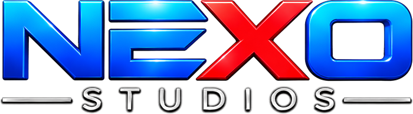

01 / 08

Propuesta digital · On demand
De la tele al teléfono.
Una estrategia para que Con Todo Respeto deje de depender del domingo en El Nueve y viva toda la semana en YouTube, Shorts y redes, con streamers como puente hacia una audiencia nueva.
La TV
es la vidriera: da prestigio y alcance.→
YouTube
es la casa: ahí se suscriben y vuelven.
Lo que integra esta propuesta
El modeloCómo la TV actual ya vive en redes.
El ecosistemaQué hace cada red y cómo se conectan.
Shorts y landingLa fábrica de clips y la página que convierte.
PublicidadYouTube Ads, Meta y TikTok con un mismo objetivo.
Una sola meta: pasar la audiencia de la televisión al canal de YouTube y sumar público joven entrevistando a streamers.
Nexo Studios × Con Todo RespetoDocumento interno · Nov. 2026
02 / 08
El modelo · La tendencia Pergolini
El rating es la vidriera. El negocio está en las redes.
Otro Día Perdido mide 4–5 puntos en El Trece, pero sus fragmentos se viralizan: la producción informa más de 19 millones de visualizaciones online, y el propio Pergolini pide suscriptores en cámara y en TikTok.
Cuatro reglas que tomamos
01Cada bloque es un clipSe graba pensando en el recorte, no solo en el aire.
02La conductora pideAndrea pide la suscripción con su cara y con su voz.
03Un corte por redEl mismo momento, editado distinto para cada plataforma.
04Vive toda la semanaEl programa no se termina cuando sale de la pantalla.
El recorrido de Con Todo Respeto
TV · El Nueve, domingoPúblico de 45 a 70 años que ya conoce el ciclo
Instagram · Andrea 1,4 M + programa 15,7 KStories con link, Reels en colaboración
Shorts, Reels y TikTok2 o 3 clips por día para descubrir el programa
Landing + YouTubeSuscripción en un toque
Episodio con streamerOn demand, todas las semanas
Fuente de la referencia: notas de prensa de 2026 (Perfil, El Economista, Infobae).
El modeloCon Todo Respeto
03 / 08
El ecosistema
Cada red tiene un trabajo distinto.
No se publica lo mismo en todos lados. Cada plataforma cumple un rol dentro del recorrido y se mide por una sola cosa.
YouTubeLa casa
Episodios con streamers, "Versión YouTube", "Lo que no salió al aire", Shorts y podcast. 3 largos por semana.
Mide: suscriptores y horas de visualización
TikTokEl descubrimiento
Los mismos clips, con texto y audio adaptados. Donde más rápido se llega a 18–30 años.
Mide: vistas y clics al perfil
InstagramLa comunidad
Andrea + cuenta del programa: 4–6 Stories con link, 1–2 Reels en colaboración, vivos cada 15 días.
Mide: toques en el enlace
FacebookEl público de TV
Reels y episodios largos para el público de 45 a 70 años que hoy mira El Nueve.
Mide: minutos vistos
Twitch, Kick y YouTubeLos streamers
Andrea invitada en sus streams y reacciones cruzadas. Cada aparición se recorta para nuestros Shorts.
Mide: picos de suscriptores en 48 h
El volumen de una semana
15–21
verticales en Shorts, Reels y TikTok
4–6
Stories de Andrea con link
Todo apunta al mismo lugar: cada pieza, en cualquier red, termina con un mismo llamado: "La entrevista completa, en YouTube".
El ecosistemaCon Todo Respeto
04 / 08
La fábrica de Shorts
Un clip por momento fuerte, todos los días.
Invitado + promesa
El momento
(arranca en el pico)
Subtítulos
"Completa en YouTube"
- 0–2 sEl gancho: la frase más fuerte, sin contexto previo.
- 2–40 sEl momento: la confesión, la reacción o la respuesta.
- 40–50 sFinal abierto o en loop, para que se vea dos veces.
- DespuésVideo relacionado que lleva al episodio y un comentario fijado.
Seis tipos de clip para rotar
La confesión"Nunca le conté esto a nadie…"
La pregunta incómodaAndrea pregunta, el invitado duda.
El quiebreSilencio, llanto o risa nerviosa.
La frase bombaTexto grande que abre el debate.
El streamer reaccionaAl archivo de TV, a pantalla partida.
Inédito"Esto no salió en la tele."
El ritmo
24 h
del domingo de TV a los primeros 3 clips
2–3
clips por día en Shorts, Reels y TikTok
3 en 3
el tipo que funciona se repite 5 veces más
ShortsCon Todo Respeto
05 / 08
La landing
Un solo link que convierte en un toque.
El link de todas las bios y de toda la publicidad. Una página pensada para el celular, con un único objetivo: suscribirse al canal.
Tráiler 30 s
"Lo que nunca se animaron a contar"
Suscribite en YouTube
Próximo streamer · viernes 19 h
Lo que no salió al aire
Proponé tu streamer · canal de WhatsApp
Escuchalo en podcast · Sponsors
- Tráiler arriba, con sonido opcional y subtítulos.
- Botón de suscripción directa al canal (con el enlace que abre la confirmación).
- Cuenta regresiva al próximo episodio con streamer.
- Los 4 episodios más vistos y la serie "Lo que no salió al aire".
- Participación: votar al próximo streamer y sumarse al canal de difusión.
- Podcast y espacio para sponsors.
Medición desde el día 1
UTM por piezaSabemos qué Story, Reel o anuncio trajo a cada persona.
PíxelesGoogle y Meta instalados para armar audiencias de remarketing.
Dominio propioCorto y fácil de decir en TV y en los vivos.
LandingCon Todo Respeto
06 / 08
Publicidad · YouTube Ads, Meta y TikTok
Pagar solo para amplificar lo que ya funciona.
Se promocionan las piezas que ya demostraron buena retención. Nunca se compran suscriptores: se paga para que la persona correcta vea el episodio correcto.
1 · 20%
2 · 25%
3 · 15%
4 · 25%
5 · 15%
1 · Descubrimiento en Shorts20%
YouTube Ads · vistas · Argentina 18–34
Los mejores Shorts como anuncio, para que YouTube aprenda a quién mostrar el canal.2 · El tráiler para fans de streamers25%
YouTube Ads · in-stream omitible · segmentos personalizados
Personas que buscan o miran canales de streaming argentinos y al streamer invitado de la semana.3 · Remarketing a la suscripción15%
YouTube Ads · audiencias del canal
A quien ya vio un Short o un episodio, se le muestra el siguiente episodio completo.4 · Anuncios de colaboración en Meta25%
Instagram y Facebook · Reels de Andrea
Los Reels de Andrea promocionados con link a la landing, para su audiencia y públicos parecidos.5 · Spark Ads en TikTok15%
TikTok · clips orgánicos que ya funcionan
Se impulsa el clip que ya rinde, desde la cuenta del programa o del streamer.
USD 800
recomendado en 60 días
72 h
para cortar el anuncio que no rinde
PublicidadCon Todo Respeto
07 / 08
On demand · El puente con streamers
Un programa que se mira cuando cada uno quiere.
La semana de un episodio
DomEl Nueve en TV y primeros clips
LunClips del domingo y encuesta
Mar"Versión YouTube" del archivo
MiéGrabación con streamer en Nexo
Jue"Lo que no salió al aire"
VieEstreno con streamer, 19 h
SábClips cruzados con el streamer
Por qué streamers
- Traen una audiencia de 18 a 34 años que no mira El Nueve.
- Cada episodio se publica en colaboración: aparece en el canal y en las redes de los dos.
- El streamer reacciona al archivo de TV: el pasado del programa se vuelve contenido nuevo.
Tres niveles de invitados
Grandes1 por mes. Arrastran audiencia y abren la temporada.
Medianos2 por mes. Comunidad fiel y más disponibilidad.
Emergentes1 por mes. Crecen con nosotros y comparten todo.
Así se ordena el canal
Edición StreamersLa temporada nueva, en orden y con tráiler.
Lo que no salió al aireLa serie exclusiva: la razón para suscribirse.
Por invitado y por temaAdicciones, amor, fama, familia: para buscar y quedarse.
PodcastLos episodios en audio, también en YouTube Music.
La regla: que cada colaboración le sirva a los dos. Si hay pago o canje, se declara como publicidad.
On demandCon Todo Respeto
08 / 08
Fases y medición
Tres fases, una pregunta: ¿se mudó la audiencia?
EncenderDías 1–30
Canal optimizado, landing activa, fábrica de clips diaria y primeras apariciones de Andrea en streams.Meta: 2.600 suscriptores
MudarDías 31–60
Primer episodio con streamer, publicidad en marcha y estreno como evento.Meta: 4.000 (techo 6.000)
InstalarDías 61–150
Temporada de 8 episodios con streamers, sponsors y expansión al resto del mundo hispano.Meta: 8.000–12.000, a recalibrar
Cómo sabemos que funciona
| Señal | Objetivo |
|---|
| Suscriptores netos por día | +45 a +80 |
| Tráfico al canal desde Instagram y la landing | En subida semana a semana |
| Público de 18 a 34 años en el canal | +10 puntos en 60 días |
| Episodio con streamer vs. archivo de TV | Rinde el doble |
| Costo por suscriptor que llega por publicidad | Bajando cada semana |
Para aprobar hoy: presupuesto de publicidad, compromiso de Andrea (4 Stories y 1 Reel por semana), dominio de la landing y lista de los primeros 10 streamers.
Nexo Studios · nexostudios.com.arIG @nexo.studios.ar